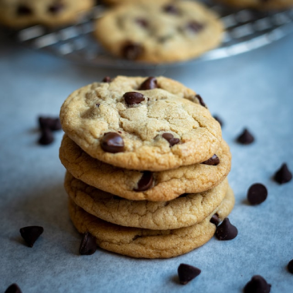

Chocolate Chip Cookies

Classic Chocolate Chip Cookies
This is a classic recipe to make soft and delicious chocolate chip cookies. Looking for a gluten free option? Just substitute the flour for your own, all-purpose gluten free blend.
Ingredients
- 2 1/2 cups flour
- 1 tsp baking soda
- 1 tsp salt
- 1 cup butter, softened
- 3/4 cup sugar
- 3/4 cup brown sugar
- 1 tsp vanilla extract
- 2 eggs
- 2 cups chocolate chips
Instructions
- Preheat oven to 375F
- Combine flour, baking soda, and salt in small bowl.
- Beat butter, sugars, and vanilla in a large bowl until creamy.
- Add eggs one at a time, beating well after each addition.
- Gradually beat in flour mixture.
- Stir in chocolate chips.
- Use round cookie scoop to drop onto ungreased cookie sheets.
- Bake for 9-11 minutes, or until golden brown.
- Cool for 2 minutes, then remove to wire racks to cool completely.
Return to Home
Recipe adapted from Namaste Flour Blog
Photo Credit Shakti Rajpurohit - Unsplash